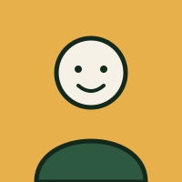
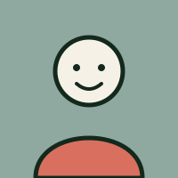
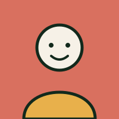

Sophie Marchand
Direction · Coordination des adoptions
Sophie a fondé le refuge en 2014 après dix ans en clinique vétérinaire. C'est elle qui mène la plupart des entretiens d'adoption.
Qui s'occupe des animaux
Sept personnes salariées et une quarantaine de bénévoles. La plupart sont arrivées ici en venant adopter, puis ne sont jamais reparties.

Direction · Coordination des adoptions
Sophie a fondé le refuge en 2014 après dix ans en clinique vétérinaire. C'est elle qui mène la plupart des entretiens d'adoption.

Technicien en santé animale
Karim gère la clinique interne : vaccins, stérilisations, suivi des convalescents. Il tient aussi les dossiers médicaux de chaque animal.

Intervenante en comportement animal
Élise travaille avec les chiens anxieux ou réactifs. Son objectif : qu'aucun animal ne soit jugé inadoptable avant d'avoir eu sa chance.
Nous n'euthanasions jamais un animal par manque de place ou parce que son adoption traîne. La seule exception reste la souffrance incurable, décidée avec un vétérinaire externe.
Refuser une adoption est parfois le meilleur service à rendre aux deux parties. Un chien de berger dans un studio sans balcon finit par revenir, plus abîmé qu'avant.
Chatons, animaux âgés et convalescents partent en famille d'accueil plutôt que de rester en enclos. Un salon vaut mieux qu'une cage, même très propre.
Les frais d'adoption couvrent environ 60 % des soins réellement engagés. Le reste vient des dons et de la vente de nos calendriers.
Nous cherchons en permanence des promeneurs de chiens le matin et des familles d'accueil pour les portées de chatons du printemps. Aucune expérience requise, formation d'une demi-journée offerte.
Écrire au refuge